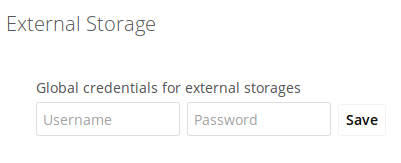
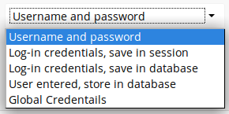

Enterprise-Only Authentication Options¶
In ownCloud 9.0+, there are five authentication backends for external storage mounts:
- Username and password
- Log-in credentials, save in session
- Log-in credentials, save in database
- User entered, store in database
- Global credentials
The first two are common to all editions of ownCloud, and the last three are only in the Enterprise edition. These are available to:
- FTP
- ownCloud
- SFTP
- SMB/CIFS
- WebDAV
- Windows Network Drive
- Username and password
- This is the default; a login entered by the admin when the external mount is created. The login is stored in the database, which allows sharing, and background jobs, such as file scanning, to operate.
- Log-in credentials, save in session
- Credentials are only stored in the session and not captured in the database. Files cannot be shared, as credentials are not stored.
- Log-in credentials, save in database
- Credentials are stored in the database, and files can be shared.
- User entered, store in database
- Users provide their own login credentials, rather than using admin-supplied credentials. User credentials are stored in the database, and files can be shared.
- Global credentials
- Re-usable credentials entered by the admin, files can be shared.
Global credentials are entered in a separate form.

Use the dropdown selector to choose the authentication backend when you create a new external mount.
